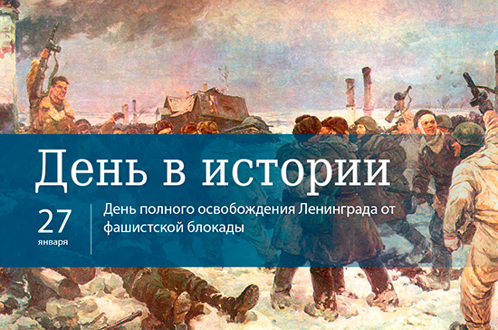

1

2 День освобождения Санкт-Петербурга
3
День воинской славы России — День полного освобождения Ленинграда от фашистской блокады
(1944 год) — отмечается в соответствии с Федеральным законом от 13 марта 1995 года № 32-ФЗ «О днях воинской славы (победных днях) России».
В 1941 году Гитлер развернул военные действия на подступах к Ленинграду, чтобы полностью уничтожить город.
8 сентября 1941 года кольцо вокруг важного стратегического и политического центра сомкнулось.
В блокированном городе оказалось более 2,5 миллионов жителей, в том числе 400 тысяч детей.
4 Важность данного события
5 "Таких эпизодов в человеческом бытии не так много, когда два с половиной миллиона человек оказываются
в кольце голода, холода, убийств, которые совершались самым современным техническим вооружением. Это событие исключительное".